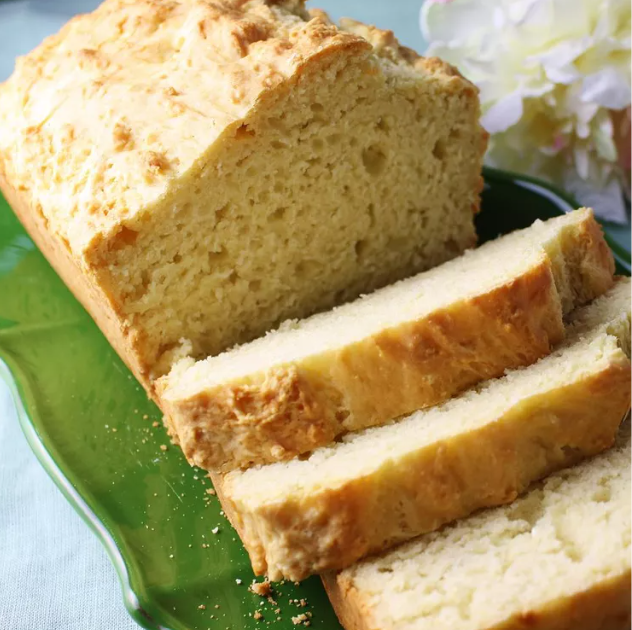

Irresistible Irish Soda Bread

This traditional Irish soda bread recipe is very easy and makes a great-tasting soda bread. Best if made the day before, or several hours before serving.
Ingredients
- 3 cups all-purpose flour
- 1 tablespoon baking powder
- ⅓ cup white sugar
- 1 teaspoon salt
- 1 teaspoon baking soda
- 1 large egg, lightly beaten
- 2 cups buttermilk
- ¼ cup butter, melted
Directions
- Preheat the oven to 325 degrees F (165 degrees C). Grease a 9x5-inch loaf pan.
- Combine flour, baking powder, sugar, salt, and baking soda in a large bowl. Blend egg and buttermilk together; add all at once to the flour mixture and mix just until moistened. Stir in butter. Pour into prepared pan.
- Bake in the preheated oven until the top is golden brown, about 65 to 70 minutes. A toothpick inserted into the bread should come out clean. Cool on a wire rack.
Home